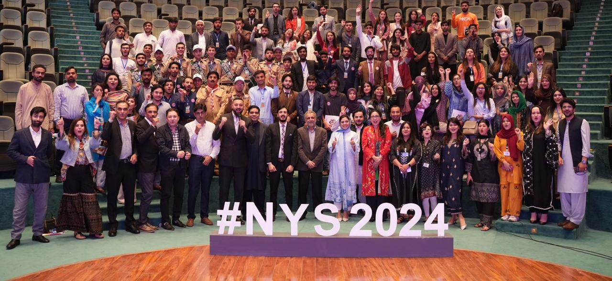

Empowering Young Innovators: Exploring Opportunities in Pakistan’s Startup Landscape
By Abdhur Rahman Nasir | October 7, 2025
As a software developer and AI enthusiast studying in Pakistan, attending the National Youth Summit 2024 was transformative. Focused on empowering young innovators, the event highlighted Pakistan's burgeoning startup ecosystem, offering insights into opportunities for aspiring entrepreneurs.
Pakistan's startup scene has exploded, with hubs like Karachi, Lahore, and Islamabad fostering innovation. Incubators such as the National Incubation Center (NIC) provide mentorship, funding, and resources. At the summit, panels discussed fintech, edtech, and agritech – sectors ripe for disruption.

Key takeaways included the role of government initiatives like the Prime Minister's Youth Program, offering loans and training. International collaborations, such as with Startup Pakistan, connect local talent to global markets. As a participant, I pitched an AI-based crop disease detection app, receiving valuable feedback.
Challenges persist: access to capital, regulatory hurdles, and skill gaps. Yet, success stories like Careem and Bykea inspire. Women-led startups are rising, with programs promoting inclusivity.

The summit emphasized networking. Meeting investors and peers sparked ideas for my projects, like integrating machine learning into e-commerce. For young innovators, events like this are crucial – they provide exposure and motivation.
Pakistan's startup landscape is vibrant, with potential to drive economic growth. As I continue my studies, I'm excited to contribute. To fellow youth: Dive in, innovate, and leverage these opportunities. The future is ours to shape.